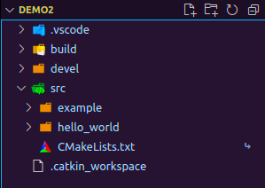
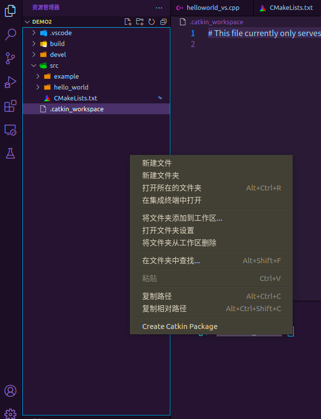
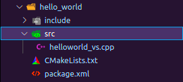

ROS开发环境搭建
安装---以Ubuntu18上的Melodic版本为例
首先添加软件源
sudo sh -c '. /etc/lsb-release && echo "deb http://mirrors.ustc.edu.cn/ros/ubuntu/ `lsb_release -cs` main" > /etc/apt/sources.list.d/ros-latest.list'
添加密钥
sudo apt-key adv --keyserver 'hkp://keyserver.ubuntu.com:80' --recv-key C1CF6E31E6BADE8868B172B4F42ED6FBAB17C654
更新源并安装完整版ROS
sudo apt update && sudo apt install -y ros-melodic-desktop-full
添加环境变量(默认为bash)
echo "source /opt/ros/Melodic/setup.bash" >> ~/.bashrc && source ~/.bashrc
rosdep初始化(应该是开发环境初始化, 但被屏蔽, 故可选操作)
sudo rosdep init && rosdep update
对应IDE设置
安装vscde(这步省略)
vscode插件
必装
CMake
CMake tools
C/C++ EP
Python
ROS
工作区下.vscode/task.json配置
{
"version": "2.0.0",
"tasks": [
{
"command":"catkin_make",
"type": "shell",
"args": [],
"problemMatcher": [
"$msCompile"
],
"group": {"kind": "build","isDefault": true},
"label": "catkin_make: build",
"presentation": {
"echo": true,
"reveal": "always",
"focus": false,
"panel": "shared",
"showReuseMessage": true,
"clear": false
}
}
]
}
.vscode/c_cpp_properties.json配置
{
"configurations": [
{
"browse": {
"databaseFilename": "${workspaceFolder}/.vscode/browse.vc.db",
"limitSymbolsToIncludedHeaders": false
},
"includePath": [
"/opt/ros/melodic/include/**",
"/home/cdog/Desktop/ros_test_space/demo2/src/helloworld/include/**",
"/usr/include/**"
],
"name": "ROS",
"intelliSenseMode": "gcc-x64",
"compilerPath": "/usr/bin/gcc",
"cStandard": "gnu11",
"cppStandard": "c++17"
}
],
"version": 4
}
新建工作区
先来看一个工作区样例

从上到下依次是
demo2---工作区名称
.vscode---IDE配置目录
build---编译中的缓存和中间文件目录
devel---开发后的生成文件目录
src---公文包目录
example & hello_world---两个公文包
CMakeLists.txt---编译配置文件
.catkin_workspace---工作区标记文件
要想生成工作区, 需要命令来执行
首先需要建立好工作区目录(demo2), 并建立好公文包目录(demo2/src)
在工作区目录下执行catkin_make, 就会自动生成开发后的生成文件目录(demo2/devel)和编译中的缓存和中间文件目录(demo2/build)
公文包创建
用vscode打开工作区, 在文件资源管理器中右键

最后的create catkin package就可以创建公文包
点击后先在命令窗口输入公文包名称, 确认后再输入依赖库列表(不同包之间用 '[space]'分隔开)
确认后会生成对应的公文包结构

其中include就是依赖, 不用管
src就是我们自己的C++源码所在位置了(如果是python文件就在scripts目录下)
CMakelists.txt更改
在我们写完每个公文包时, 需要对每个公文包的CMakelists进行更改, 根据不同的语言分成两种更改方式
Python
更改Line162-165
# catkin_install_python(PROGRAMS # scripts/my_python_script # DESTINATION ${CATKIN_PACKAGE_BIN_DESTINATION} # )去除开头的三个
#,my_python_script改为自己的.py文件
C++
更改Line136:
# add_executable(${PROJECT_NAME}_node src/example_node.cpp)删去开头
#,${PROJECT_NAME}_node更改为自定义的节点名称,example_node.cpp改成你要启动的主程序文件名更改Line149-151
# target_link_libraries(${PROJECT_NAME}_node # ${catkin_LIBRARIES} # )去除开头的三个
#,${PROJECT_NAME}_node更改为自定义的节点名称(与上一个一致)
编译执行
回到工作区主目录
执行catkin_make等待编译(VScode环境可用后可用快捷键[Ctrl Shift b])
无报错后执行source ./devel/setup.bash
启动roscore
执行rosrun <公文包名> <自定节点名>